学术研究
立足传媒专业，常年扎根乡村振兴、普通话推广实践一线，从事文化传播、新媒体传播研究，致力于探索数智时代传播创新路径
数智时代地方文化参与式传播路径创新探究——以大别山精神推普队实践为例
摘要以亨利·詹金斯的"参与式文化"理论为基础提出PIIC模式，旨在运用先进交互技术和传播手段来激发受众主动性，实现受众从文化的被动接受者转变为文化的参与者、反馈者和传播者，从而创新地方文化传播路径，并结合黄冈师范学院大别山精神推普队的实践，论证PIIC模式赋能地方文化传播的效果，为数智时代地方文化的活态传承与价值放大提供可复制的理论范式与实践路径。
高校自媒体平台对学生思政引领的现状及对策分析——以湖北省H高校为例
摘要随着互联网的迅猛发展，自媒体平台逐渐成为高校学生获取信息和表达观点的重要渠道。其在高校广大青年学生群体中的影响力已不容忽视，这对高校学生思想政治教育产生了深远的影响。国内各大高校也逐渐意识到自媒体平台在校园文化建设、校园舆情、学生思想政治教育等方面发挥着重要作用。本文将以湖北省H高校现阶段实际情况为例，探讨自媒体平台在高校学生思想政治教育中的角色定位，分析其对学生的影响与意义，并提出改进建议。
以"语"为桥 薪火相传——大别山精神推普队的"普通话+"实践与启示
摘要针对大别山精神传播中存在的内涵时代适配不足、方言壁垒阻碍跨区传播、多元主体协同断层等现实挑战，黄冈师范学院大别山精神推普队创新构建"普通话+"传播模式。该模式以"语言为桥、精神为魂"，通过具身认知理论指导的情景剧活化历史叙事，结合空间生产理论的研学徒步构建连续性记忆图谱，运用语言经济学赋能直播带货实现产品符号价值跃升；并精准对接青少年、商户、从业者等对象，协同校社、校企、校媒资源形成合力。实践证明，"普通话+"模式不仅有效破解了红色精神"听不懂、传不开、用不上"的困境，也为新时代红色基因传承与乡村振兴提供了可复制的创新路径。
普通话赋能与精神传承——大别山精神推普队的"普通话+"传播实践与路径创新
摘要大别山精神作为中国革命精神的重要组成部分，是红色文化传承与乡村振兴的重要精神资源。本文以黄冈师范学院大别山精神推普队的实践为案例，通过分析其在普通话推广与精神传播中构建的"普通话+"模式，探讨新时代大别山精神的传播机制。研究发现，推普队通过"普通话+红色教育""普通话+文旅融合""普通话+产业发展"的多元融合路径，形成"载体创新—受众分层—协同传播"的三维传播体系，有效破解了红色精神传播中的地域局限、语言障碍与形式单一等问题，为红色文化的活态传承与乡村振兴提供了实践范式。
在"一带一路"背景下加强黄冈"山坡"文化在东盟国家的传播对策
摘要在"一带一路"倡议的推动下，黄冈"山坡"文化在东盟国家的传播具备条件。本文建议通过发挥官方机构主体作用、拓展传播平台、调动个体与群体参与、实现精准传播等措施，推动黄冈文化在东盟国家的传播，促进双方文化交流与合作，为高质量共建"一带一路"做出黄冈贡献。
让农家书屋成为文化风景线
摘要随着乡村振兴战略的推进，农家书屋正成为基层文化服务与建设的重要阵地。文章对当下农家书屋发展中存在的文化功能弱化、阅读体验单调、数字化应用效果不佳、业务链单一等问题进行了系统总结，并以湖北省黄冈市黄州区陈策楼村为调查点，通过实地观察、调查访谈、问卷调查收集一手数据，运用统计学、AI进行分析，同时参考近年来成功案例，从主体意识、阅读体验、科技创新、运营创收四方面创造性提出运营新策略，尝试为农家书屋深度赋能乡村文化振兴和转型升级提供新的思路。
语传薪火：大别山智慧推普公益在行动
- 开展针对大别山区地方文化传播与普通话推广的实践调研，共收集了480余份问卷并进行了70余次访谈；运用模糊集定性比较分析法（fsQCA）研究制约大别山革命老区地方文化传播和普通话推广的核心因素
- 基于研究结果，提出 PIIC（Participation-Interaction-Immersion-Communication，参与-互动-沉浸-传播）模型
- 策划并开展了多项相关公益活动，累计吸引超过5,000名参与者；该项目还被各级媒体报道100余次
数智时代高校传媒教育理念变革和路径创新研究
- 参与构建涵盖九个维度的研究框架，包括课程认知、学习需求、课程设计、教学形式、支持体系、评估方式、学习成果、学生反馈及教师反馈；参与制定研究方案与访谈提纲
- 对参与研究的学生、教师及高校管理人员开展了20余次深度访谈，并协助收集与分析问卷及访谈数据，为基于人工智能技术驱动的高校传媒教育改革研究提供支持
"智媒"AI：名人数字化传播赋能文旅发展
- 牵头整合现有开源大语言模型、视觉生成引擎与音视频合成技术，将多模态AI技术嵌入传媒内容生产的各环节，构建历史语境下名人形象的多模态创作闭环
- 主导研发“智媒AI大模型”及数字媒体作品的制作，相关数字成果在各大媒体平台播出，并被收录至黄冈师范学院媒介口语传播艺术研究中心官网“名人数字馆”专栏；申请一项国家软件著作权登记
大别山地区"乡村希望书屋"新公益模式研究
- 开展针对农家书屋运营困境的实地调研，通过发放200余份调查问卷、走访36户农村家庭及对政府相关职能部门负责人进行2次深度访谈收集大量一手数据；采用SPSS软件进行定量分析，并运用人工智能工具辅助定性分析
- 结合传播学与管理学理论，提出一个涵盖书屋运营、受众体验、数字赋能及文化教育的“3+1”运营模式，并组织开展相关公益活动以支持该模式的落地实施
- 该本科创新训练计划成功获评省级项目认定
项目纪实
田野调查、深度访谈、问卷调查，记录每一个研究的瞬间
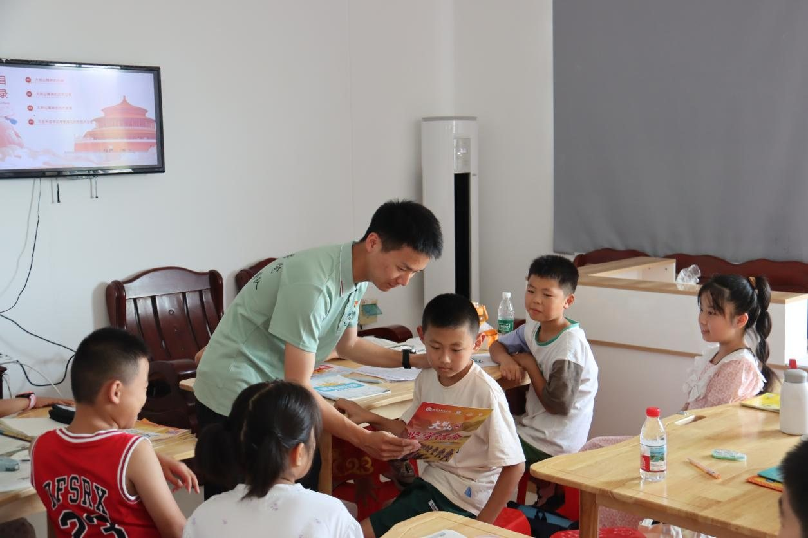
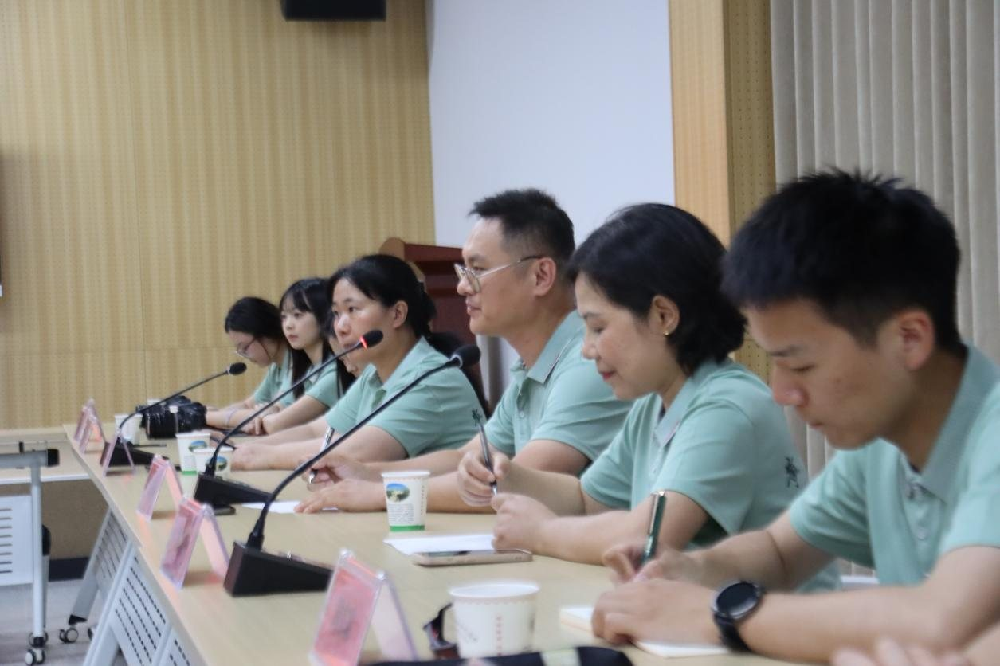
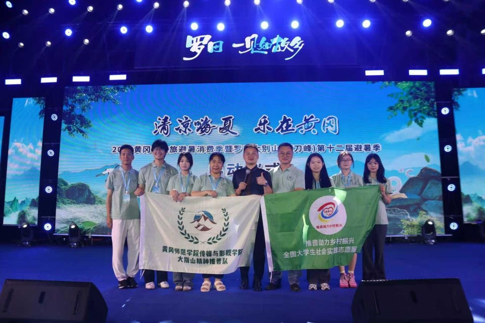
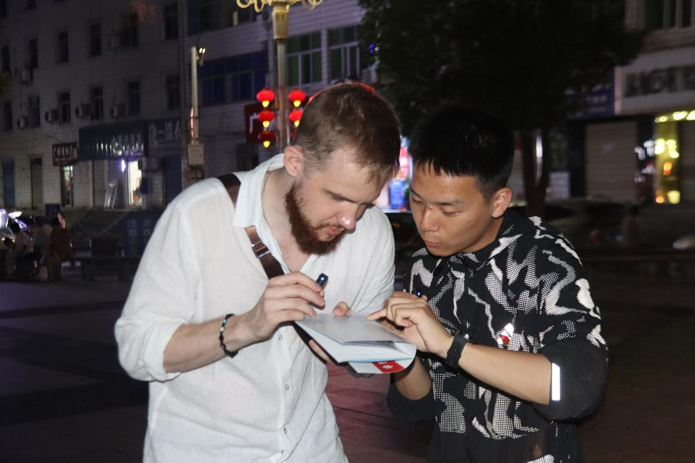
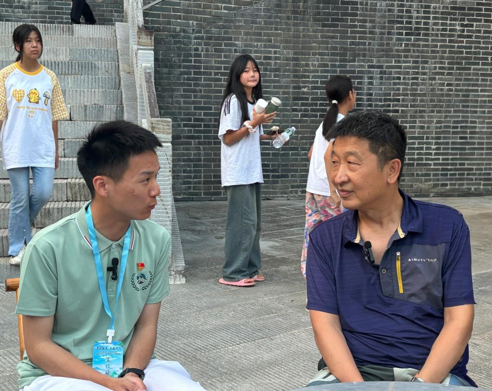
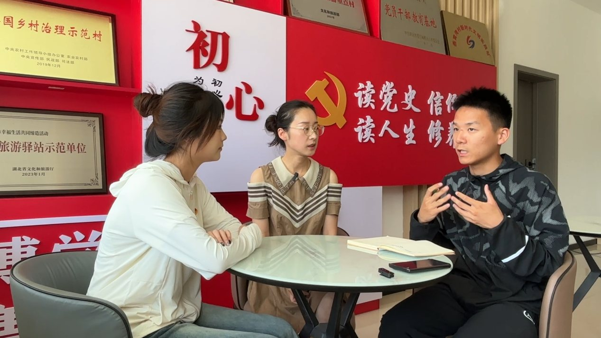
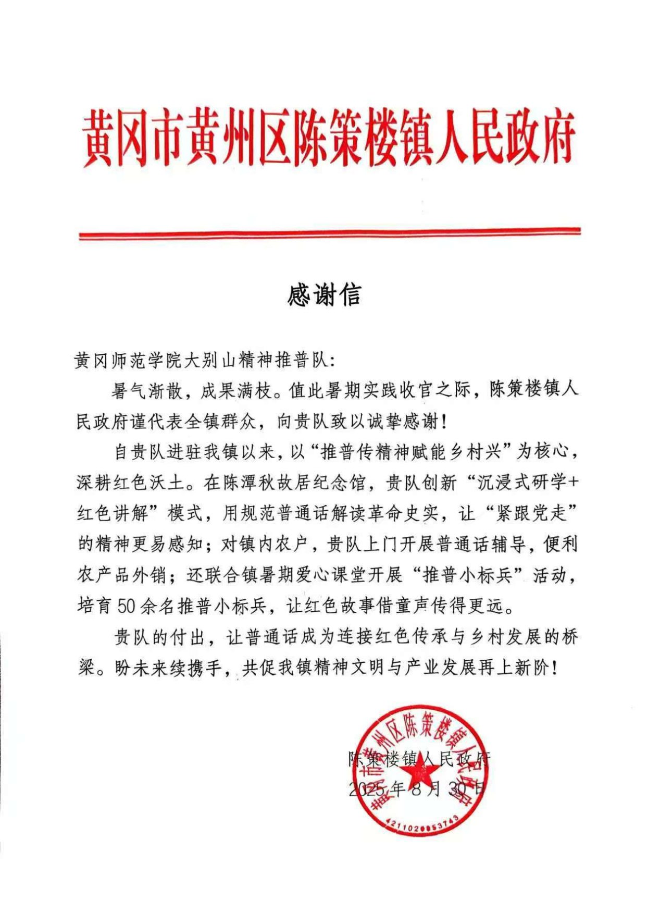
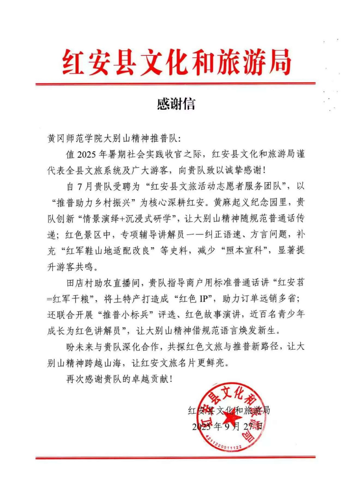
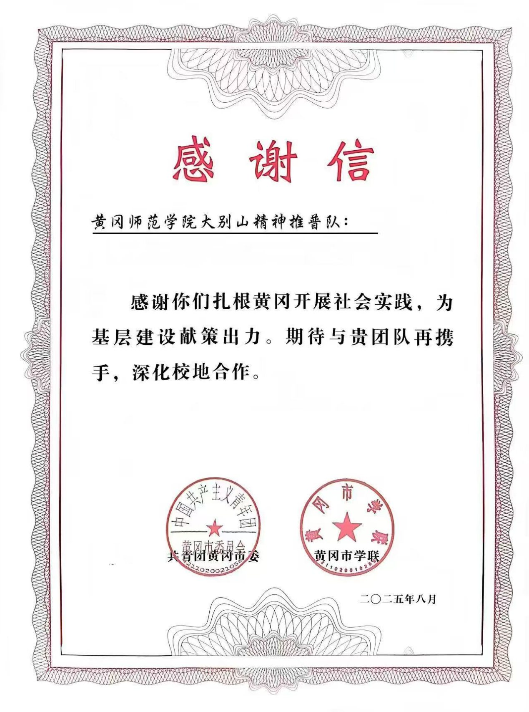
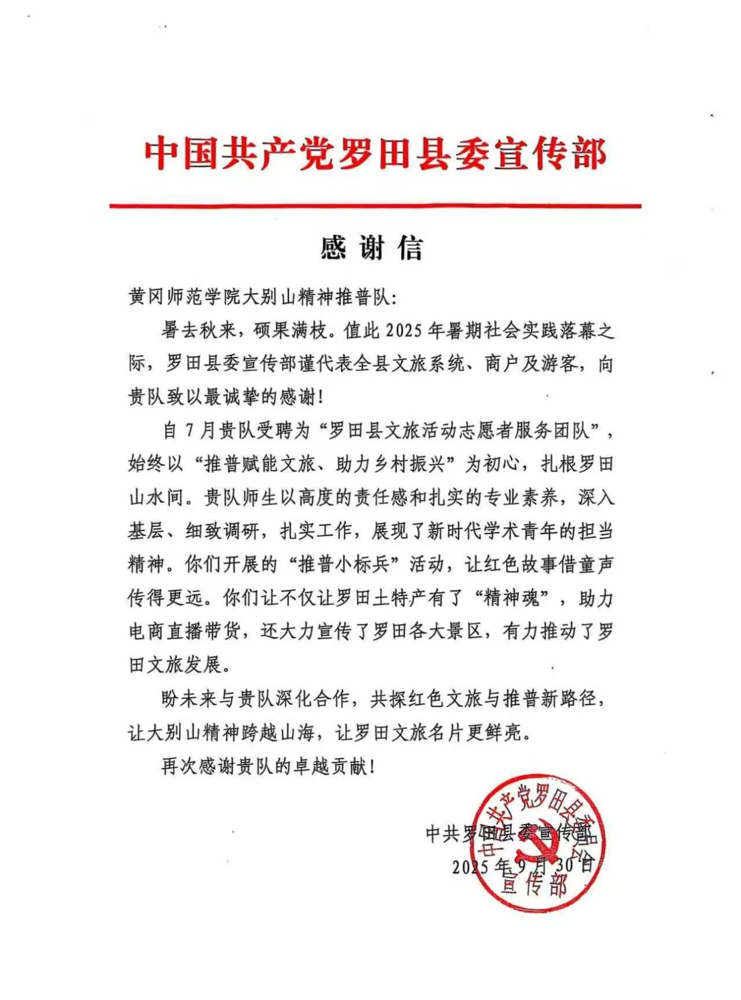
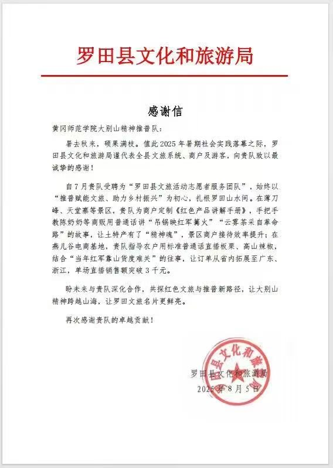